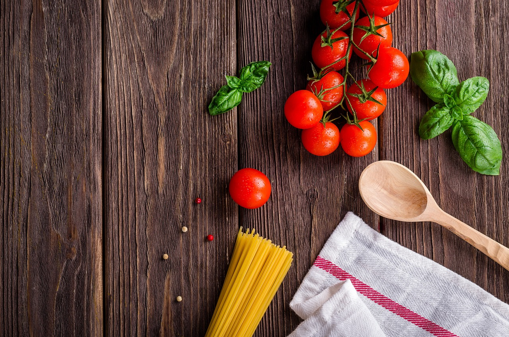

Explore our collection of recipes and transform your meals into unforgettable experiences. From breakfast to dinner and everything in between, discover new flavors and classic dishes all in one place.
Our website is dedicated to food lovers everywhere. Whether you're a seasoned chef or just starting out, you'll find recipes to suit every taste and skill level. Dive into our culinary world and let your taste buds be your guide!
Check out the most popular recipes on Food Network.